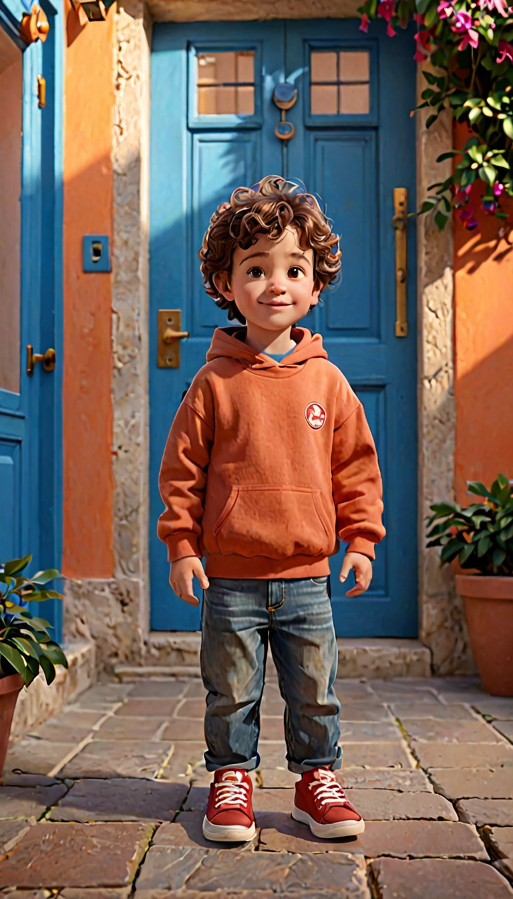
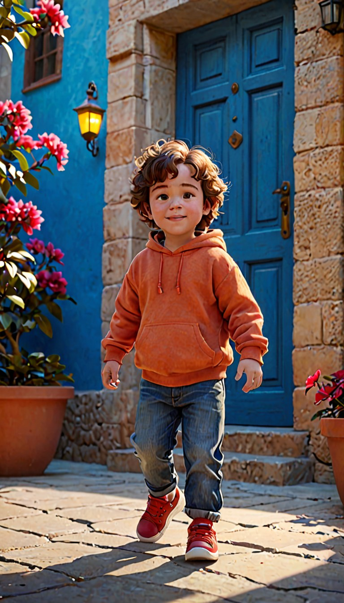
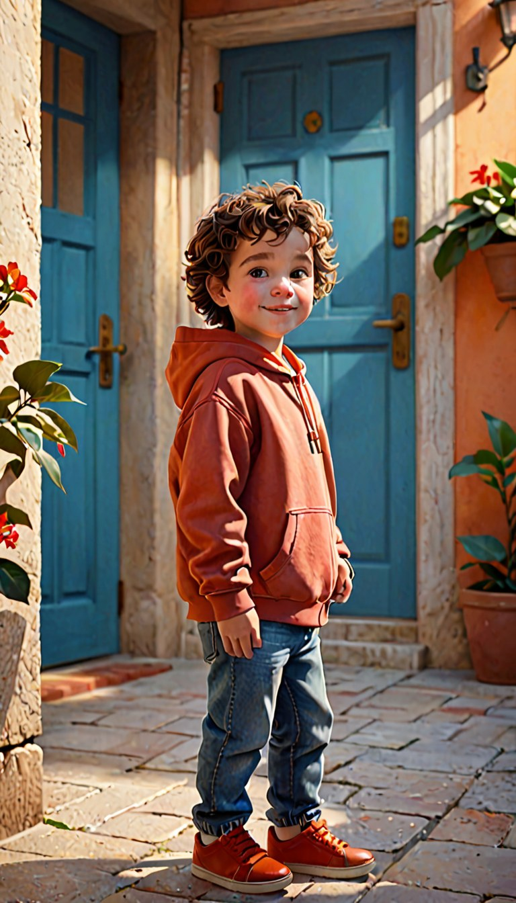
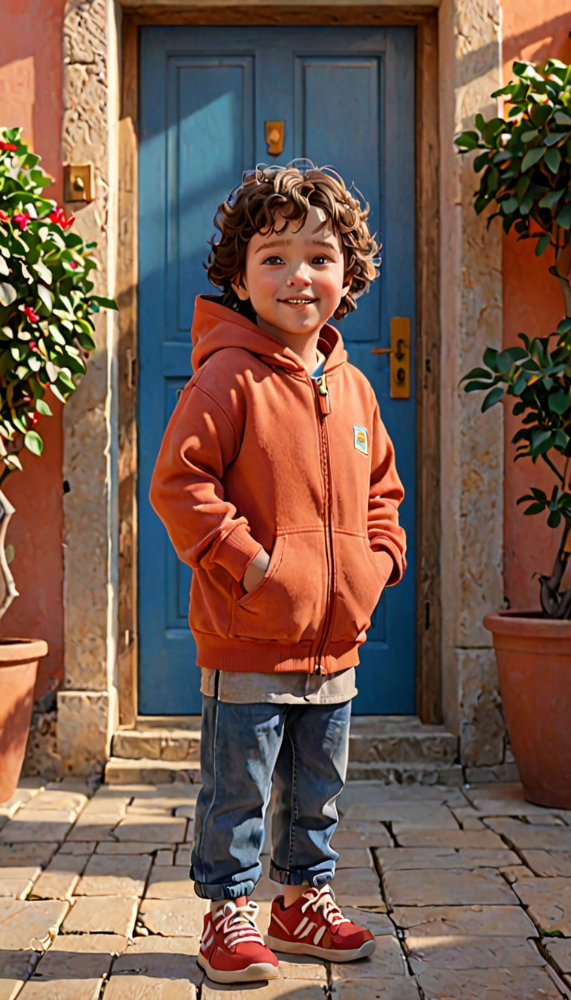
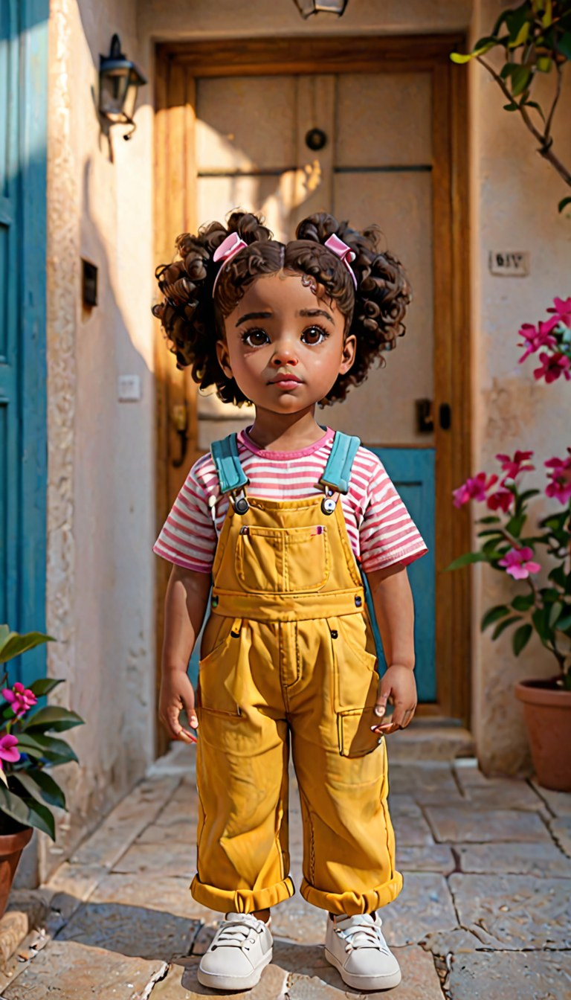
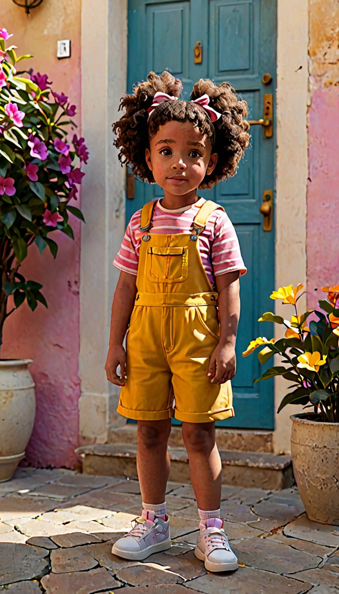
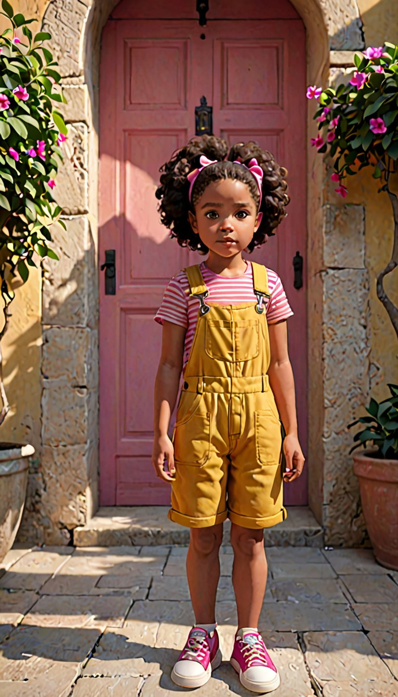

<title>בחירת נועם ותמר</title>
<meta name="claude:viewport-fit-sides" content="cover">
<link rel="preconnect" href="https://fonts.googleapis.com">
<link rel="preconnect" href="https://fonts.gstatic.com" crossorigin>
<link rel="stylesheet" href="https://fonts.googleapis.com/css2?family=Fredoka:wght@500;600;700&family=Rubik:wght@400;500&display=swap">
<style>
/* Layout: a casting wall. One row per character, four numbered takes; the numbers are what the user replies with. */
:root {
  --bg: #F3F2EF; --surface: #FFFFFF; --fg: #1E2230; --muted: #5A6174; --line: #DEDBD3;
  --orange: #E8640F; --yellow: #D99A00; --door: #2F6DB5;
  --display: "Fredoka", "Rubik", "Arial Hebrew", system-ui, sans-serif;
  --body: "Rubik", "Arial Hebrew", system-ui, sans-serif;
}
@media (prefers-color-scheme: dark) { :root:not([data-theme="light"]) {
  --bg: #121418; --surface: #1B1E25; --fg: #EEF0F4; --muted: #A3AABA; --line: #2C303A;
  --orange: #FF8A45; --yellow: #F2C14B; --door: #77A6E8; color-scheme: dark; } }
:root[data-theme="dark"] {
  --bg: #121418; --surface: #1B1E25; --fg: #EEF0F4; --muted: #A3AABA; --line: #2C303A;
  --orange: #FF8A45; --yellow: #F2C14B; --door: #77A6E8; color-scheme: dark; }

body { background: var(--bg); color: var(--fg); font-family: var(--body); font-size: 16px; line-height: 1.6; }
.wrap { max-width: 1240px; margin: 0 auto; padding-block: 36px 60px; display: grid; gap: 44px;
  padding-left: max(16px, env(safe-area-inset-left, 0px)); padding-right: max(16px, env(safe-area-inset-right, 0px)); }
h1, h2 { font-family: var(--display); margin: 0; line-height: 1.12; text-wrap: balance; }
h1 { font-size: clamp(2rem, 5vw, 3rem); font-weight: 700; }
h2 { font-size: clamp(1.5rem, 3.4vw, 2rem); font-weight: 600; }
p { margin: 0; }
.intro { display: grid; gap: 10px; max-width: 64ch; }
.intro p { color: var(--muted); font-size: 1.05rem; }
.intro strong { color: var(--fg); font-weight: 500; }
.row { display: grid; gap: 14px; }
.row header { display: flex; align-items: baseline; gap: 12px; flex-wrap: wrap; }
.row header p { color: var(--muted); }
.noam h2 { color: var(--orange); }
.tamar h2 { color: var(--yellow); }
.takes { display: grid; grid-template-columns: repeat(4, minmax(0, 1fr)); gap: 14px; }
figure { margin: 0; background: var(--surface); border: 1px solid var(--line); border-radius: 18px; overflow: hidden; display: grid; }
figure a { display: block; }
figure img { display: block; width: 100%; height: auto; aspect-ratio: 768 / 1344; object-fit: cover; background: var(--line); }
figcaption { display: flex; align-items: center; gap: 10px; padding: 10px 14px; font-family: var(--display); font-weight: 600; font-size: 1.1rem; }
.num { width: 32px; height: 32px; border-radius: 50%; display: grid; place-items: center; background: var(--fg); color: var(--surface); font-size: 1rem; }
.note { color: var(--muted); max-width: 70ch; border-inline-start: 4px solid var(--door); padding-inline-start: 12px; }
.tamar .takes { grid-template-columns: repeat(3, minmax(0, 1fr)); max-width: calc(75% - 3.5px); }
@media (max-width: 900px) { .takes, .tamar .takes { grid-template-columns: repeat(2, minmax(0, 1fr)); max-width: none; } }
</style>

<main class="wrap" dir="rtl" lang="he">
  <section class="intro">
    <h1>איזה נועם ואיזו תמר?</h1>
    <p>ארבע גרסאות לנועם ושלוש לתמר, כולם בני 5, בסגנון קולנועי ובחצר עם קיר אבן ירושלמית. כל גרסה היא אותו תיאור עם נקודת התחלה אחרת, ולכן הפנים והתנוחה שונים קצת.</p>
    <p><strong>תכתוב לי בצ׳אט מספר לנועם ומספר לתמר</strong>, למשל ״נועם 2, תמר 3״. אפשר לגעת בתמונה כדי לפתוח אותה בגודל מלא. אם משהו לא מתאים, כמו צבע, שיער או הבעה, תגיד ואתקן.</p>
  </section>

  <section class="row noam">
    <header><h2>נועם</h2><p>קפוצ׳ון כתום, תלתלים חומים, ג׳ינס ונעליים אדומות</p></header>
    <div class="takes">
      <figure><a href="noam_1.jpg" target="_blank" rel="noopener"></a><figcaption><span class="num">1</span>נועם 1</figcaption></figure>
      <figure><a href="noam_2.jpg" target="_blank" rel="noopener"></a><figcaption><span class="num">2</span>נועם 2</figcaption></figure>
      <figure><a href="noam_3.jpg" target="_blank" rel="noopener"></a><figcaption><span class="num">3</span>נועם 3</figcaption></figure>
      <figure><a href="noam_4.jpg" target="_blank" rel="noopener"></a><figcaption><span class="num">4</span>נועם 4</figcaption></figure>
    </div>
  </section>

  <section class="row tamar">
    <header><h2>תמר</h2><p>אוברול צהוב, חולצה ורודה מפוספסת וקוקיות נפוחות. השאר נפסלו כי המודל החליף צבעים או הוסיף ילד נוסף.</p></header>
    <div class="takes">
      <figure><a href="tamar_1.jpg" target="_blank" rel="noopener"></a><figcaption><span class="num">1</span>תמר 1</figcaption></figure>
      <figure><a href="tamar_2.jpg" target="_blank" rel="noopener"></a><figcaption><span class="num">2</span>תמר 2</figcaption></figure>
      <figure><a href="tamar_3.jpg" target="_blank" rel="noopener"></a><figcaption><span class="num">3</span>תמר 3</figcaption></figure>
    </div>
  </section>

  <p class="note">אחרי הבחירה אכין את הסט הסופי ב־4K (2160x3840): תמונה ראשית לכל דמות, שניהם יחד, מבט מלפנים, מהצד ומאחור, ושלוש הבעות פנים. הדמות שתבחר תשמש כרפרנס, כדי שהפנים יישארו זהים בכל התמונות.</p>
</main>
